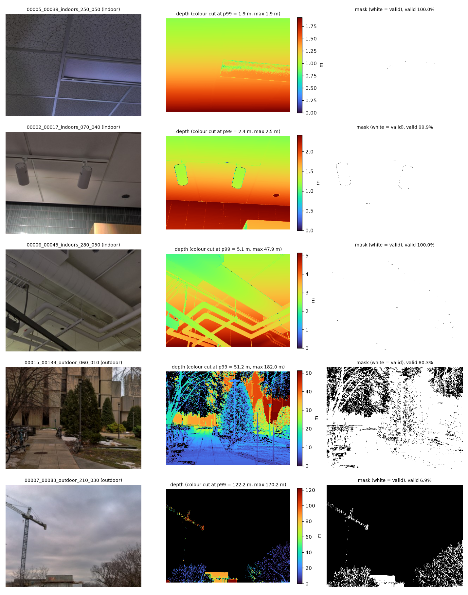
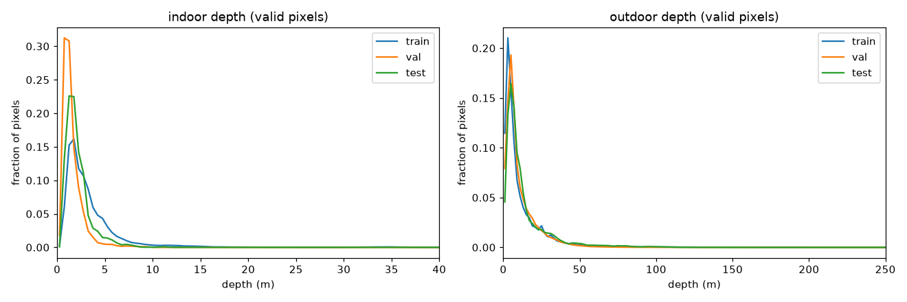
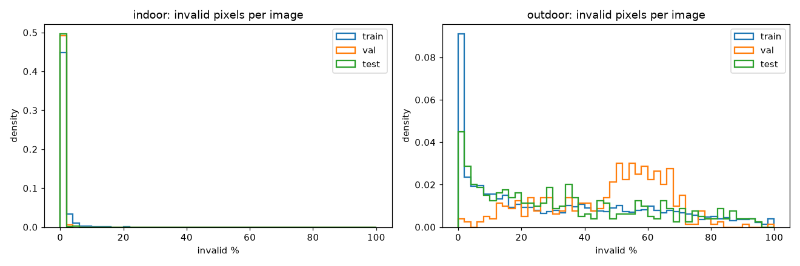
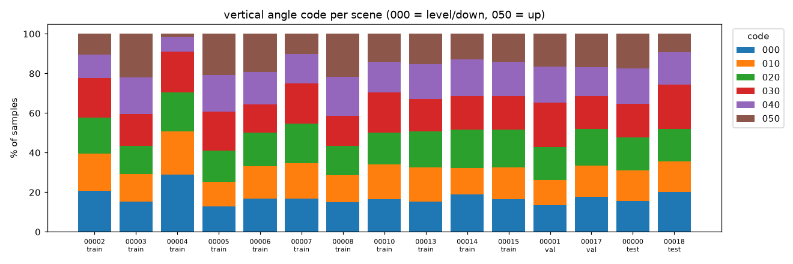

| Name | Student ID |
|---|---|
| Trần Hoàng Vỹ Khang | 2352502 |
| Đỗ Đàng Khoa | 2352554 |
| Dương Đàng Khoa | 2352551 |
| Milestone | Due | Minimum Required | State |
|---|---|---|---|
| M1 Proposal (15%) | 07 Oct 2026 | Dataset Proposal: task, data, split, metrics, baseline, compute estimate | Complete ✓ |
| M2 Draft (25%) | 28 Oct 2026 | Baseline + pretrained model in progress, EDA, first metrics | Not started (waits for approval) |
| M3 Final (60%) | 11 Nov 2026 | Controlled experiment, error analysis, report, slides, video, checkpoints | Not started |
| Item | Value |
|---|---|
| Dataset | DIODE subset, 7,195 RGB–depth pairs, 384×288 |
| Approval status | Pending (waiting for instructor review) |
| Conditions from instructor | — |
Main experiments (training and evaluating the baseline and MiDaS) start only after the proposal is Approved or Approved with conditions. Everything on this page is data checking and a short speed test.
Monocular depth estimation means predicting, for every pixel of a single RGB image, how far that point is from the camera. It is useful for robots, AR and 3D scene understanding when only one normal camera is available. The hard part is that one image does not contain real scale: a small room close to the camera and a big hall far away can look the same. The model must learn scale from cues like object size, perspective and texture.
Our dataset mixes indoor and outdoor scenes, so the depth range is very different: most indoor pixels are 1–9 m, while outdoor goes up to 100–200 m. Ground truth comes from a laser scanner, so some pixels have no valid depth (sky, glass, object edges). These pixels must be ignored in training and evaluation.
| Item | Definition |
|---|---|
| Input | One RGB image, 3 × 288 × 384 (H × W) |
| Output | Depth map, 1 × 288 × 384, in metres |
| Supervision | Ground-truth depth d* and validity mask m (1 = valid). Loss and metrics use only pixels with m = 1 |
| Formulation | Learn fθ: image → depth, minimising a masked loss between fθ(x) and d* over valid pixels |
| Item | Value |
|---|---|
| Name | DIODE: A Dense Indoor and Outdoor DEpth Dataset (Vasiljevic et al., 2019, arXiv:1908.00463) |
| Official site | diode-dataset.org |
| Copy we used | Kaggle mirror artemmmtry/diode-a-dense-indoor-and-outdoor-depth-dataset (26,229 RGB images in total), accessed Oct 2026 |
| Version | Original DIODE release; our own subset built from it on 04 Oct 2026 (rules in 2.4) |
| License | MIT (DIODE devkit repository; the Kaggle mirror lists the same license) |
| Item | Value |
|---|---|
| Total | 7,195 RGB–depth pairs from 15 scenes (7 indoor, 8 outdoor) |
| Per split | train 4,995 · val 1,100 · test 1,100 |
| Files per sample | <id>.jpg (RGB), <id>_depth.npy (float16, metres), <id>_depth_mask.npy (uint8, 0/1) |
| Annotation | Dense depth from a laser scanner + validity mask (0 = no measurement) |
| File name | <scene>_<scan>_<indoors|outdoor>_<horizontal angle>_<vertical angle>, e.g. 00005_00039_indoors_250_050 |
We checked all files after download: every sample has all 3 files, total files = 3 × 7,195 = 21,585, no extra files.
The split unit is the scene. One scene has many scans and many views of the same place, so splitting by image would put almost the same picture in train and test. We assign whole scenes to one split (seed 42), about 70/15/15 by samples (69.4% / 15.3% / 15.3%). Each split has both indoor and outdoor scenes.
| Split | Indoor scenes (samples) | Outdoor scenes (samples) | Total |
|---|---|---|---|
| train | 00002 (700), 00003 (466), 00004 (400), 00005 (340), 00006 (700) | 00007 (389), 00008, 00010, 00013, 00014, 00015 (400 each) | 4,995 (2,606 in / 2,389 out) |
| val | 00001 (700) | 00017 (400) | 1,100 |
| test | 00000 (700) | 00018 (400) | 1,100 |
No scene appears in two splits (checked with scenes_used.csv and again on the downloaded files). The test split is not used for any decision before the final evaluation.
subset_metadata.csv, so the subset can be rebuilt.
Script: scripts/eda.py, run on all 7,195 samples. Depth statistics use only valid pixels (mask = 1) and the raw data (no depth cap).

| Split | Domain | Samples | p5 | Median | p95 | p99 | p99.9 | Invalid % (mean) | Invalid % (median) |
|---|---|---|---|---|---|---|---|---|---|
| train | indoor | 2,606 | 1.0 | 2.6 | 9.0 | 20.2 | 36.9 | 0.8 | 0.2 |
| train | outdoor | 2,389 | 1.2 | 6.3 | 37.6 | 74.8 | 148.4 | 31.4 | 23.7 |
| val | indoor | 700 | 0.6 | 1.3 | 3.5 | 6.4 | 9.4 | 0.2 | 0.0 |
| val | outdoor | 400 | 1.4 | 7.1 | 32.5 | 51.4 | 95.1 | 47.4 | 51.8 |
| test | indoor | 700 | 0.8 | 1.8 | 5.0 | 7.5 | 14.2 | 0.2 | 0.0 |
| test | outdoor | 400 | 2.1 | 8.3 | 46.3 | 84.6 | 121.9 | 33.2 | 28.2 |
Depth columns in metres (percentiles over all valid pixels of that split and domain).


| Domain | Threshold | Images with ≥ 1 pixel above | % of valid pixels above |
|---|---|---|---|
| indoor | > 20 m | 1,687 / 2,606 (64.7%) | 1.0123% |
| indoor | > 30 m | 1,598 / 2,606 (61.3%) | 0.6714% |
| indoor | > 50 m | 1,434 / 2,606 (55.0%) | 0.0085% |
| outdoor | > 100 m | 1,758 / 2,389 (73.6%) | 0.4263% |
| outdoor | > 150 m | 982 / 2,389 (41.1%) | 0.0927% |
| outdoor | > 200 m | 279 / 2,389 (11.7%) | 0.0051% |
| outdoor | > 300 m | 1 / 2,389 | 0.0000% |
00006_00058 is an indoor atrium where almost every pixel is 35–40 m. A cap at 20 or 30 m would delete real data.The vertical angle code goes from 000 (level) to 050 (looking up at ceiling or sky). The horizontal code covers 000–350, and all 15 scenes have all 36 horizontal and all 6 vertical codes.

| Step | Setting |
|---|---|
| Resize | 1024×768 → 384×288, done once when building the subset |
| RGB | Scale to [0, 1], ImageNet mean/std normalisation (same as MiDaS) |
| Depth | Kept in metres, not normalised |
| Invalid pixels | mask = 0, NaN, depth ≤ 0, or depth > 50 m (indoor) / 200 m (outdoor) → mask 0 and depth 0 |
| Augmentation (train only) | Random horizontal flip, applied to RGB, depth and mask together. Colour jitter may be added later |
Implemented in src/data/dataset.py (DiodeDepthDataset, get_dataloaders). Sanity test scripts/check_dataset.py: RGB (3, 288, 384), depth and mask (1, 288, 384), no NaN, mask has both 0 and 1.
Computed on valid pixels only, at 384×288, in metres. d = prediction, d* = ground truth, N = number of valid pixels.
| Metric | Formula | Better |
|---|---|---|
| Abs Rel | (1/N) Σ |d − d*| / d* | lower |
| RMSE | sqrt( (1/N) Σ (d − d*)² ) | lower |
| δ < 1.25k, k = 1, 2, 3 | % of pixels with max(d/d*, d*/d) < 1.25k | higher |
A small U-Net (encoder–decoder with skip connections) trained from scratch. It predicts log-depth and is trained with a masked scale-invariant log loss (SILog, Eigen et al., 2014). Same data, split, preprocessing and number of epochs as the pretrained model. It shows how far we get without pretraining.
intel-isl/MiDaS, EfficientNet-Lite3 encoder, 21.3 M params), pretrained on a mix of depth datasets.| Item | Plan |
|---|---|
| Hypothesis | Full fine-tuning gives lower Abs Rel than training only the decoder, mostly on outdoor, because DIODE’s far range differs from MiDaS training data. A frozen encoder is faster and uses less memory. |
| Changed factor | (A) encoder frozen, decoder trained vs (B) whole network trained |
| Fixed factors | Data and split, preprocessing, loss, optimizer, decoder learning rate, batch 8, 20 epochs, hardware |
| Runs | 3 seeds each (42, 43, 44), report mean ± std |
| Metrics | Abs Rel, RMSE, δ (all / indoor / outdoor), training time, peak VRAM |
| Decision criterion | (B) is better only if its mean val Abs Rel is lower than (A) by more than the larger of the two standard deviations |
Measured on our own laptop with scripts/benchmark_midas.py: real forward/backward steps of MiDaS small on our images
(5 warm-up + 100 timed steps, placeholder loss). This is only a timing test: no weights saved, no metrics computed.
| Setting | Value |
|---|---|
| Hardware | NVIDIA RTX 4060 Laptop GPU (8 GB), 16 CPU threads, 15 GB RAM |
| Software | Python 3.14.7, PyTorch 2.14.0+cu130, timm 1.0.30 |
| Measurement (MiDaS small, input 288×384) | Time | Peak VRAM |
|---|---|---|
| Inference, batch 1 | 6.9 ms / image | 0.12 GB |
| Inference, batch 8 | 4.9 ms / image | 0.42 GB |
| Fine-tune fp32, batch 8 | 0.137 s / step → ~1.5 min / epoch | 3.2 GB |
| Fine-tune mixed precision, batch 8 | 0.084 s / step → ~1.0 min / epoch | 2.0 GB |
One epoch = 625 steps on 4,995 train images + one val pass on 1,100 images. nvidia-smi peak for the whole run was 5.4 / 8 GB (including ~1 GB used by the desktop).
| Plan | Estimate |
|---|---|
| Zero-shot MiDaS on test (1,100 images) | < 10 s |
| One fine-tuning run, 20 epochs | ~30 min (fp32) / ~19 min (mixed precision) |
| Controlled experiment: 2 settings × 3 seeds × 20 epochs | ~3 GPU hours |
| Total with U-Net baseline and a ×2 safety margin | about 6–8 GPU hours, fits on our own laptop; Colab/Kaggle only as backup |
Only 100 training steps were timed, so heat throttling on long runs is not tested, and the real loss may cost a bit more. That is why we add the ×2 margin. The U-Net baseline has not been timed yet.
src/data/dataset.py) — reads RGB + depth + mask by file id, depth cap, joint flip, DataLoaders.scripts/check_dataset.py) — shapes, depth range, mask values, one batch.scripts/visualize_samples.py) — Figure 1.scripts/eda.py) — all tables and Figures 2–4, per-sample CSV.scripts/benchmark_midas.py) — Section 7.Commands (from assignment2/, data in data/diode_subset/):
python scripts/check_dataset.py --root data/diode_subset python scripts/visualize_samples.py --root data/diode_subset python scripts/eda.py --root data/diode_subset python scripts/benchmark_midas.py --root data/diode_subset --train_iters 100